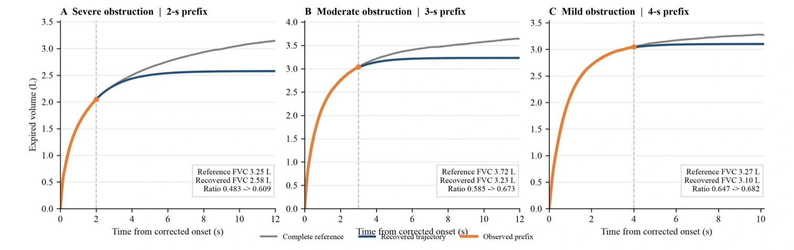

a. Motivation & problem


Orange: measured prefix · Blue: estimated continuation · Gray: completed reference. Volume is measured in liters and time in seconds.
I developed this extension of PredictX to make respiratory screening more useful when a patient could not complete a full breathing test.
Spirometry is a breathing test used to assess airway obstruction in conditions such as chronic obstructive pulmonary disease (COPD). It compares the air exhaled in the first second (FEV₁) with the total exhaled volume (FVC). If a patient finishes before exhalation is complete, FVC can be underestimated, making the ratio look healthier and concealing obstruction.
I fitted a bounded two-compartment volume model to NHANES recordings sampled at 100 Hz. Its fast and slow components represent different rates of lung emptying, allowing the observed portion of the curve to estimate the missing continuation and reassess the screening ratio. Instead of treating the shortened recording as complete, the model uses the shape of exhalation to recover a volume estimate and then checks whether the resulting decision is reliable enough to report.
b. Methodology — reliability checks and model comparison
Some incomplete recordings contain too little information for a dependable estimate. A reliability selector therefore combines recording duration, curve-fit quality, remaining volume change and agreement between the physiological model and ridge regression, a separate statistical estimate.
At 75% coverage, the method classifies the three-quarters of recordings judged most reliable and withholds the rest. Participant-separated cross-fitting prevents a person’s records from training the model used to assess them, while independent NHANES survey cycles test whether the method works on new participants.
c. Results & interpretation — independent-cohort evaluation
Among naturally incomplete recordings, reconstructing the missing exhalation reduced missed obstruction from 42.7% to 6.7%. At 75% coverage on independent Cycles E and G, sensitivity was 96.0% and 96.1%, meaning the proportion of obstructed recordings correctly identified; specificity was 99.7% and 99.8%, the proportion of non-obstructed recordings correctly identified.
Cohen’s kappa, which measures agreement beyond chance, reached 0.952 and 0.959. At the same 75% coverage, this exceeded a selector using ridge-derived features by 0.019 and 0.030, with paired bootstrap intervals excluding zero. Because both methods retained the same proportion of recordings, the improvement reflects more reliable screening decisions rather than the exclusion of more difficult cases.